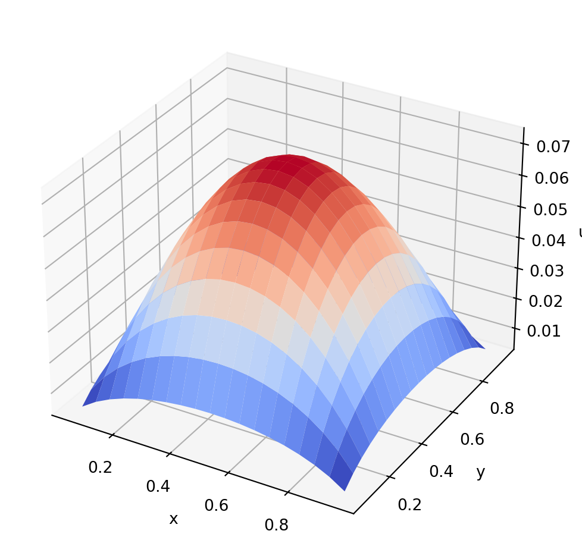

import numpy as np
from scipy.optimize import root
import matplotlib.pyplot as plt
from matplotlib import cm
"""
set up the problem parameters
"""
# domain parameters
a = 0
b = 1
c = 0
d = 1
# number of grid points
Nx = 20
Ny = 20
# Value of the constant source term
q = 1
"""
construct the grid
"""
# grid points
x = np.linspace(0, 1, Nx+1)
y = np.linspace(0, 1, Ny+1)
x_int = x[1:Nx]
y_int = y[1:Ny]
# grid spacing in x and y directions
dx = (b - a) / Nx
dy = (d - c) / Ny
# total number of unknowns
dof = (Nx - 1) * (Ny - 1)
print('There are', dof, 'unknowns to solve for')
# mapping from grid indices (i,j) to global indices (k)
k = lambda i,j : i + (Nx - 1) * j
"""
Function to pass to SciPy's root. This function
builds the algebraic system in the form F(U) = 0,
where U is a 1D array that contains the solution
components at all interior grid points. The code
below is not optimal and improvements can be made.
"""
def dirichlet_problem(U):
# Pre-allocation of 2D arrays
u = np.zeros((Nx-1, Ny-1))
F = np.zeros((Nx-1, Ny-1))
# Convert the 1D soln array U[k] into a 2D array u[i,j]
for i in range(0, Nx - 1):
for j in range(0, Ny - 1):
u[i,j] = U[k(i,j)]
# Build the algebraic system as a 2D array F[i,j]
for i in range(0, Nx - 1):
for j in range(0, Ny - 1):
# near x = a boundary
if i == 0 and 0 < j < Ny - 2:
F[i,j] = (
(u[i+1,j] - 2 * u[i,j] + 0) / dx**2 +
(u[i,j+1] - 2 * u[i,j] + u[i,j-1]) / dy**2 +
q
)
# near x = b boundary
elif i == Nx - 2 and 0 < j < Ny - 2:
F[i,j] = (
(0 - 2 * u[i,j] + u[i-1,j]) / dx**2 +
(u[i,j+1] - 2 * u[i,j] + u[i,j-1]) / dy**2 +
q
)
# near y = c boundary
elif j == 0 and 0 < i < Nx - 2:
F[i,j] = (
(u[i+1,j] - 2 * u[i,j] + u[i-1,j]) / dx**2 +
(u[i,j+1] - 2 * u[i,j] + 0) / dy**2 +
q
)
# near y = d boundary
elif j == Ny - 2 and 0 < i < Nx - 2:
F[i,j] = (
(u[i+1,j] - 2 * u[i,j] + u[i-1,j]) / dx**2 +
(0 - 2 * u[i,j] + u[i,j-1]) / dy**2 +
q
)
# near x = a, y = c corner
elif i == 0 and j == 0:
F[i,j] = (
(u[i+1,j] - 2 * u[i,j] + 0) / dx**2 +
(u[i,j+1] - 2 * u[i,j] + 0) / dy**2 +
q
)
# near x = a, y = d corner
elif i == 0 and j == Ny - 2:
F[i,j] = (
(u[i+1,j] - 2 * u[i,j] + 0) / dx**2 +
(0 - 2 * u[i,j] + u[i,j-1]) / dy**2 +
q
)
# near x = b, y = c corner
elif i == Nx - 2 and j == 0:
F[i,j] = (
(0 - 2 * u[i,j] + u[i-1,j]) / dx**2 +
(u[i,j+1] - 2 * u[i,j] + 0) / dy**2 +
q
)
# near x = b, y = d corner
elif i == Nx - 2 and j == Ny - 2:
F[i,j] = (
(0 - 2 * u[i,j] + u[i-1,j]) / dx**2 +
(0 - 2 * u[i,j] + u[i,j-1]) / dy**2 +
q
)
# grid points not adjacent to a boundary
else:
F[i,j] = (
(u[i+1,j] - 2 * u[i,j] + u[i-1,j]) / dx**2 +
(u[i,j+1] - 2 * u[i,j] + u[i,j-1]) / dy**2 +
q
)
# Now the 2D array for F[i,j] needs to be converted into a
# 1D array of the form F[k]
F_1d = np.zeros((Nx-1) * (Ny-1))
for i in range(Nx-1):
for j in range(Ny-1):
F_1d[k(i,j)] = F[i,j]
# return the 1D array
return F_1d
"""
solve the algebraic system using SciPy's root function
"""
# First we set the initial guess (in this case zeros)
U_0 = np.zeros((Nx-1) * (Ny-1))
# Solve
sol = root(dirichlet_problem, U_0)
# Check for convergence
print(f'Did root converge: {sol.success}')
U = sol.x
"""
turn the 1D solution array U into a 2D array u
"""
u = np.zeros((Nx-1, Ny-1))
for i in range(Nx-1):
for j in range(Ny-1):
u[i,j] = U[k(i,j)]
"""
now we plot the solution
"""
# turn the 1D arrays for x_int and y_int
# into 2D arrays for plotting
xx, yy, = np.meshgrid(x_int, y_int)
# due to how the global index function k(i,j) is defined
# we need to plot the transpose of u rather than u
fig, ax = plt.subplots(subplot_kw={"projection": "3d"})
ax.plot_surface(xx, yy, u.T, cmap=cm.coolwarm)
ax.set_xlabel("x")
ax.set_ylabel("y")
ax.set_zlabel("u")
plt.show()There are 361 unknowns to solve for
Did root converge: True